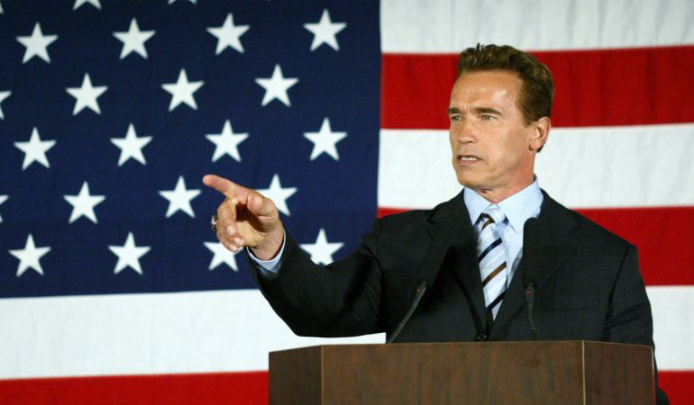

Schwarzenegger anunció su candidatura a la elección a Gobernador el 6 de agosto de 2003 en el episodio de Tonight Show con Jay Leno. Era el nombre más conocido de la lista de candidatos, pero sus ideas políticas eran desconocidas para la mayoría de californianos. Su candidatura fue una noticia internacionalmente. Los medios de comunicación lo apodaron "Governator" (en una referencia a Terminator). Schwarzenegger solamente participó en uno de los debates con el resto de candidatos a gobernador el 24 de septiembre de 2003.
El 7 de octubre de 2003 fue elegido Gobernador con el 48% de los votos. Schwarzenegger es el inmigrante que más lejos ha llegado en el mundo político de Estados Unidos desde John G. Downey en 1862. Se presentó a la reelección el 7 de noviembre de 2006 ganando con el 56% de los votos. Debido a la fortuna de su época de actor no aceptó el salario de gobernador de 175.000 dólares anuales.
Arnold Schwarzenegger Gobernador de California
Schwarzenegger anunció su candidatura a la elección a Gobernador el 6 de agosto de 2003 en el episodio de Tonight Show con Jay Leno. Era el nombre más conocido de la lista de candidatos, pero sus ideas políticas eran desconocidas para la mayoría de californianos. Su candidatura fue una noticia internacionalmente. Los medios de comunicación lo apodaron "Governator" (en una referencia a Terminator). Schwarzenegger solamente participó en uno de los debates con el resto de candidatos a gobernador el 24 de septiembre de 2003.
El 7 de octubre de 2003 fue elegido Gobernador con el 48% de los votos. Schwarzenegger es el inmigrante que más lejos ha llegado en el mundo político de Estados Unidos desde John G. Downey en 1862. Se presentó a la reelección el 7 de noviembre de 2006 ganando con el 56% de los votos. Debido a la fortuna de su época de actor no aceptó el salario de gobernador de 175.000 dólares anuales.